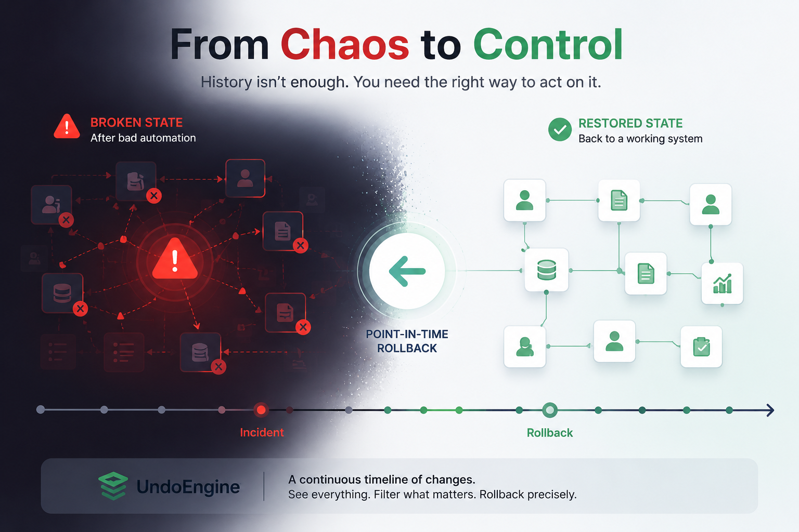

In Salesforce, data history becomes critical when something goes wrong — and the system needs to be restored to a working state as quickly as possible.
A typical incident looks like this:
Automation updates a large number of records. Due to a logic error, the system modifies the wrong data, and business processes start to break.
And this is where the limitations of traditional approaches become visible.
The first is snapshot-based backups. The idea is simple: the system periodically saves its state, and in case of an issue, you restore one of these points in time.
The problem is that real incidents never align with snapshot timing. As a result, rollback is always imprecise: you either lose valid changes that happened after the snapshot, or you retain part of the corrupted state.
The second approach is change tracking and audit logging. Here the logic is different: if every change is recorded, in theory you can reconstruct any state.
In practice, however, this often requires significant manual effort and quickly becomes an operational burden. History grows alongside the system, it needs to be constrained, carefully managed, and decisions must be made about what to track, how long to retain it, and how much storage it consumes.
The core issue is that history exists, but in it does not form a unified operational layer that can be used during an incident.
UndoEngine approaches this differently.
Instead of treating history as an archive or a collection of logs, it builds a continuous, compact timeline of changes within the Salesforce system, with minimal and controlled storage usage.
The key idea is that history stops being something you only inspect. It becomes a structure you can actively work with.
You can view the full chain of changes, filter it, isolate a specific incident, and perform a point-in-time rollback — without needing to restore the entire system.
And that’s the difference.
Instead of restoring an entire state from a snapshot or manually reconstructing events from logs, you work only with the changes that actually caused the issue.
UndoEngine introduces a single operational layer that allows you not just to see history, but to act on it.